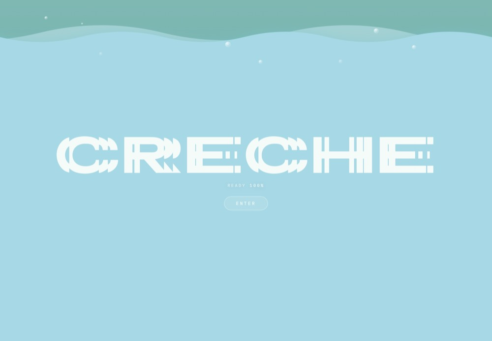
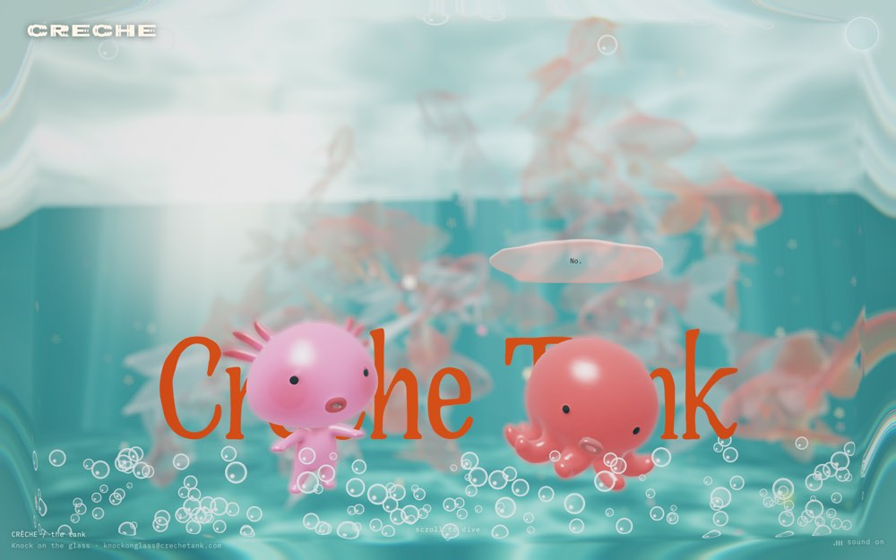
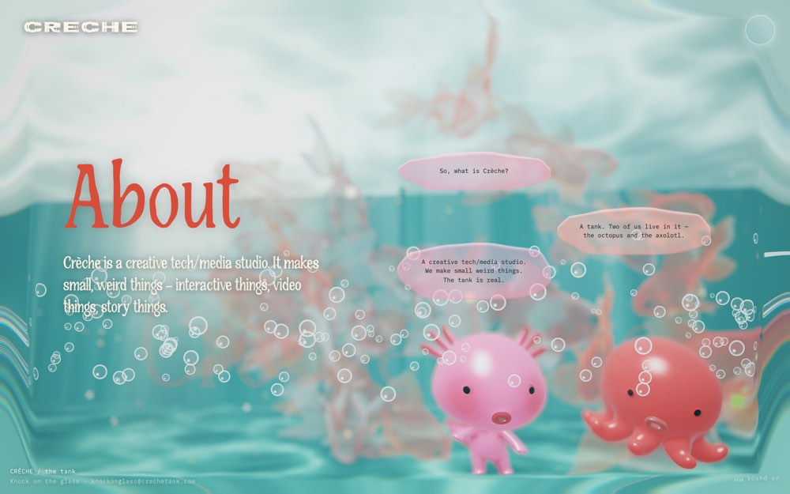
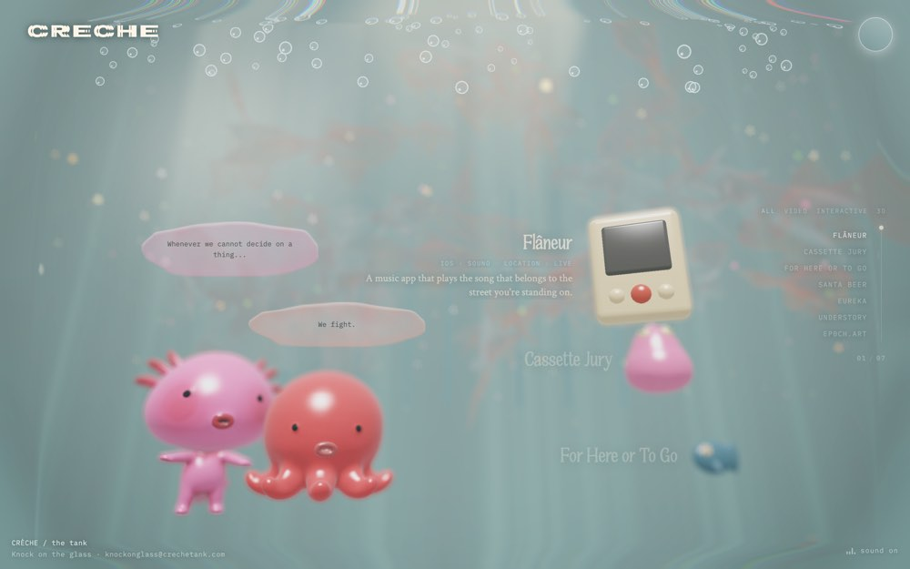
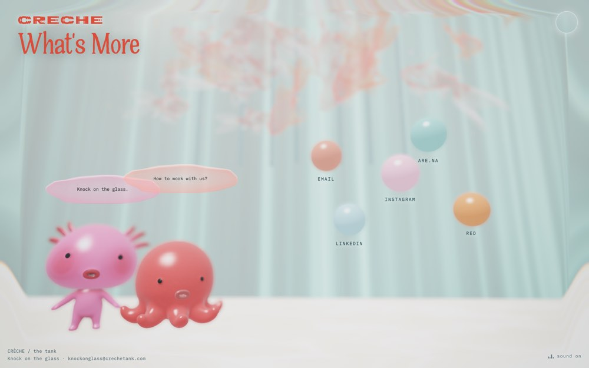
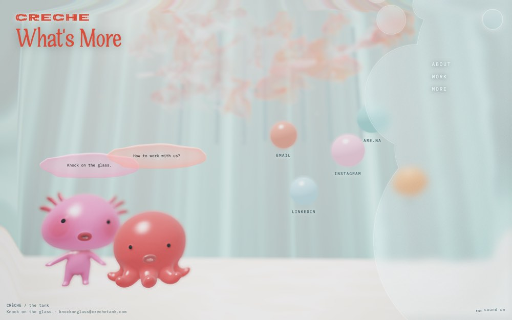
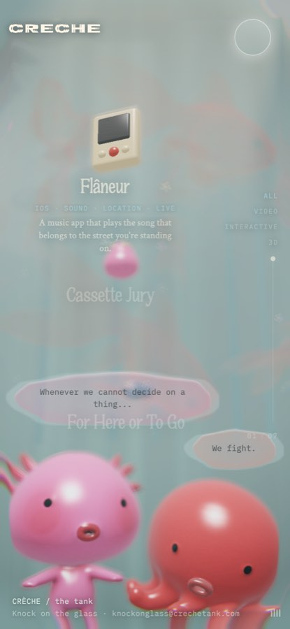

The whole site is a single WebGL aquarium. Sections aren't pages — they are layers faded in over the same scene while the camera dives deeper on scroll ("scroll to dive"). An axolotl and an octopus stay on screen the entire time, and almost every line of copy is delivered as one of them speaking. The site never explains itself in paragraphs; it has two characters with opinions instead.







The characters have a relationship, not just a presence. They disagree ("We fight."), they deflect ("No."), they answer for the studio. That is what makes it cute — personality through dialogue, not through big eyes.
Characters live at the bottom edge, in front of everything, at toy scale. The biggest type on the page sits behind them. Small labels float around them like a museum vitrine.
Three faces, three jobs. Quedami (a quirky, hand-cut display) in coral for every title, huge, line-height .86. Crimson Text for long blurbs and italic taglines. IBM Plex Mono for everything the interface says — nav, tags, chips, meta, buttons, the dialogue bubbles, and lowercase hints ("scroll to dive", "sound on", "poke a creature").
A world palette, not a UI palette. Deep teal ground #0A2C2E, rendered water around #A7D8E5, cream #FDF5E7 for all light text, coral #D94E3B for all display type, and the characters themselves are the saturated notes (pink #F186AF, red). Contact orbs are pastel identity colours.
Every surface is frosted glass built the same way: blur(10px), a 3–20% radial tint, an SVG noise layer blended in, an inset depth shadow, a 1px white rim, and an feDisplacementMap refraction on the edges. Shapes are irregular blobs from masked border-images — nothing is a rounded rectangle. On mobile the blur is turned off.
Slow and elegant, as a site can afford to be: sidebar 500ms on cubic-bezier(.22,.61,.36,1), rail thumb 550ms, hover widens letter-spacing on menu links, ambient bob on orbs and bubbles, a chevron loop on the dive hint. Reduce Motion is honoured everywhere (bubbles, bars, hint all switch off).
| Tank token | Value | Job |
|---|---|---|
--c-red | #D94E3B | All display type. Never a button. |
--c-cream | #FDF5E7 | Light text, wordmark, loader pill. |
--c-blue / --c-teal | #A7D8E5 · #6FAFAD | Water. Active rail chip. Meta lines in the panel. |
html background | #0A2C2E | The deep end. Also the theme-colour. |
--c-pink / --c-ink | #F186AF · #303030 | Axolotl / bubble tint; dark text on glass. |
--glass-depth | inset 0 3px 7px #fff 5%, inset 0 -10px 18px #081E24 5% | The inner bevel that makes a blob read as glass. |
| Mono scale | 10–13px, tracking .12–.3em, uppercase | Too small for an app; the register is the borrow, not the size. |
The context doc forbids gloss ("the moment an asset goes shiny it flips into the aesthetic we rejected"), reserves tangerine for tappable things only, and wants the map readable under a sheet. The tank is glossy, floats everything, and blurs the whole world. So the borrow is the staging, voice, and material recipe — not the render style and not the aqua paint job.
#C2E6EE by day. In Dusk the water goes #0F2E31 — the tank at night. The aqua never touches UI chrome.#242321.BlurView on the sheet; content is never blurred.Platform mode: iOS-native. Theme: pristine light by day, deep dark at dusk. Structure: map-led with a detented sheet. Imagery: matte low-poly renders. Texture: ultra-subtle grain, one glass hero surface. Palette: warm neutral plus one accent. Everything in §10.3 of the context doc stands; the rows below are additions.
| New token | Day | Dusk | Job |
|---|---|---|---|
water | #C2E6EE | #0F2E31 | Map water. Replaces #DCE5E3. The only place the tank's colour lands. |
glass | paper @ 72% · blur 20 | #1B1917 @ 66% · blur 20 | The sheet, and Rascal's bubble. Nothing else. |
glass-rim | white @ 65%, 1px top | white @ 14%, 1px top | The highlight that makes it read as a pane, not a scrim. |
glass-depth | inset 0 1px 0 rim, inset 0 -14px 24px #081E24 5% | Straight from the tank. | |
grain | 220px tiled noise PNG, 4–6% opacity, multiply | Over the map and the sheet. Static image, not a filter. | |
mono | IBM Plex Mono 500 · 12px caps .14em / 13–14px lowercase | Kickers, meta, hints, progress numbers, Rascal. | |
bubble | One blob shape, glass fill, 14px mono, ink | Sniffing and Saved only. Everywhere else his lines are plain text. | |
Live: the glass recipe over a stand-in map, in this page's CSS. Switch your theme to see Dusk.
The pins stay legible through the pane because the blur is on the sheet, not on the map. That's the whole trick, and it's why the tank switches blur off on phones: they blur the world. We blur one surface.
These are image-direction prompts, written to the mobile art-direction skill's rules: one screen per image, phone mockup present but quiet, text comfortably large, the same design bible locked across the set. Paste the preamble first, then the screen. Generate each screen fresh — never crop one out of another.
iOS app screen presented inside a clean iPhone mockup: thin dark frame, centered, even margins on a plain warm off-white background, soft controlled shadow. The screen content is the hero; the phone is quiet. App: Ruckus — you save places you found in reels, and your friends in a "Den" turn them into plans. Mascot: Rascal, a raccoon rendered in matte low-poly 3D — flat faceted shading, one soft key light, soft ambient occlusion, no gloss, no specular highlights, no reflections. Visual system (lock this across every screen): warm paper UI — surfaces #FBFAF6, raised surfaces #F2EEE2, hairlines #E5E0D4, ink #242321, secondary ink #5E594F, muted #8A8478. Exactly one accent, tangerine #FF6846, used only on tappable things (primary button, selected pin, active chip, active tab); buttons are dark ink text on tangerine, never white text. Map water is pale aqua #C2E6EE; land #F2EEE2; roads #FBFAF6; parks #E6EBDC. Very faint film grain over map and sheet. Type: display is a rounded geometric sans like Fredoka, bold, no letter-spacing, used for screen titles (40px), sheet titles (28px) and row names. Body is a rounded humanist sans like Nunito. Small labels, kickers, hints and everything Rascal says are IBM Plex Mono — uppercase letterspaced for kickers, lowercase for hints — never smaller than 12px. All text comfortably readable. Surfaces: the bottom sheet is a single pane of frosted glass — paper at ~72% opacity, 20px blur, a 1px white rim highlight on its top edge, a soft inner depth shadow — and the map ghosts through it. Nothing else is glass. Rascal speaks in irregular soft blob-shaped bubbles (not pills, not rounded rectangles) filled with the same glass, mono text in ink. Filter chips are pills. Corner radius on cards is modest. Pins: teardrop — filled circle with a short tail, category glyph knocked out in paper, resting pins in #5E594F, selected pin larger in tangerine. Bottom tab bar: Home · Places · People, active tab in tangerine, home indicator visible, safe areas respected. Do not use: purple, gradients on UI, glassmorphism anywhere except the sheet and Rascal's bubble, glossy 3D, dashboards, stat cards, tiny text, emoji as icons, generic line-icon packs.
The loader's "knock" becomes the first line Rascal says. Big display type behind him, the way "Crèche Tank" sits behind the axolotl. One button.
Screen: Welcome. Warm paper background with faint grain and a very soft aqua glow low on the screen, like light through water. Rascal the matte low-poly raccoon sits at the bottom third, seen from the chest up, in front of the display title so the title is partly behind his ears: "Ruckus" in Fredoka at 64px, ink. Above the title a mono kicker: "A PLACES APP FOR FRIENDS". One blob-shaped glass speech bubble to Rascal's upper right, mono 14px: "You saw it in a reel. I'll remember where it is." Bottom: a full-width tangerine button with dark ink text "Let's go", and beneath it a lowercase mono hint in muted grey: "already in a den? join with a link". Calm, one focal point, lots of air.
The contact orbs, repurposed. Four critter heads floating in a room with mono names beneath, instead of four cards in a grid. Selection is a tangerine ring plus a bigger head, never colour alone.
Screen: Set yourself up. Top-left back chevron. Display title "Who are you in the den?" at 34px, ink. Beneath it a filled text field on raised paper with the name "Amelia", label above in mono kicker "YOUR NAME". The lower two-thirds of the screen is an open room: four matte low-poly critter heads float at slightly different heights and depths, as if suspended — a slate-blue raccoon, a blush-pink possum, a tan squirrel, a lilac skunk — each with its name beneath in mono uppercase letterspaced ("RACCOON", "POSSUM", "SQUIRREL", "SKUNK"), 12px. The raccoon is selected: slightly larger, with a thin tangerine ring around it and a small tangerine dot, casting a soft drop shadow. Faint grain and a soft vignette on the room. Bottom: tangerine button with ink text "That's me". Airy, toy-like, no cards, no boxes.The current board with atmosphere: water goes aqua, the map gets grain and vignette, the sheet becomes a pane, Rascal keeps peeking. The one-line count stays a sentence.
Screen: Places at the peek detent. Full-screen map of a Toronto neighbourhood in the paper palette — land #F2EEE2, roads #FBFAF6, a lake edge in pale aqua #C2E6EE at the top right, parks #E6EBDC — with neighbourhood labels "BLOORCOURT" and "LITTLE ITALY" in mono, and faint film grain plus a soft vignette so the map feels like a place, not a diagram. Top-left over the map: mono kicker "TORONTO SHENANIGANS" then display title "Places" at 40px in ink. Seven teardrop pins in dark ink with paper glyphs (fork, wine glass, footprints); one selected pin, larger, tangerine. Two squircle map controls on the right (zoom, locate) with soft shadow and no border. A tangerine circular add button fixed at the bottom-right corner above the sheet. At the bottom a frosted glass sheet rises about 140pt — paper at 72%, the roads and one pin visibly ghosting through it, a 1px white rim on its top edge, a grab handle — containing mono kicker "YOUR SHARED STASH" and display text "6 good ideas" at 28px. Rascal peeks over the sheet's right edge: head and two paws, matte low-poly. Tab bar beneath: Home, Places (active, tangerine), People.
Chips are pills; the sheet is glass; the map still shows. Rows keep their three lines — name, neighbourhood and distance, and the human line — because that third line is the whole reason this isn't a bookmark folder.
Screen: Places at the half detent. The same map fills the top 45% of the screen, with the title "Places" and kicker "TORONTO SHENANIGANS" over it and the selected tangerine pin visible. The frosted glass sheet now covers the lower 55%: paper at 72% opacity with the map faintly ghosting through, 1px white rim on the top edge, grab handle. Inside, top to bottom: mono kicker "YOUR SHARED STASH", display "6 good ideas" at 28px; a row of pill chips — "Everyone" (active, tangerine with ink text), "Today", then three chips that are small critter heads with names "Ana", "Sam", "Jo"; then three list rows, each 68pt: a category mark on the left (the same glyph as the pin, in a dark circle) with a tiny critter head badged on its corner, then three text lines — row name in Fredoka 17px ("Dual Citizen"), "Bloorcourt · 12 min walk" in Nunito muted, and a human line in Nunito "Ana says the flat white is the whole point" — and on the right two small overlapping critter heads for who wants to go. The first row is selected with a 4pt tangerine rail on its left edge. Tangerine add button fixed bottom-right. Tab bar: Places active.The tank makes you wait for water to fill and shows you a number. Ruckus never gates, but the one loading state gets the same care: a tabular percentage in mono, Rascal sniffing, and a line from him.
Screen: Add a place, modal sheet covering the tab bar. Paper background, grab handle, mono kicker "ADD A PLACE" and display title "Paste a link" at 34px. A filled input on raised paper showing a truncated reel URL "instagram.com/reel/C8x…" with a small paste icon. Below it, centered in generous space: Rascal in a sniffing pose — nose down, one paw forward, matte low-poly — and beneath him a mono progress line in tabular figures "SNIFFING · 64%" with a thin hairline progress bar filled 64% in tangerine. One blob-shaped glass bubble beside Rascal, mono 14px: "Someone tagged a coffee bar. Give me a second." Lower on the sheet, three muted secondary options as plain text rows with hairlines: "Search a place", "Type it in" — the multi-source posture. No primary button while resolving. Calm and readable; the progress number is the focal point.
The hero staging from the tank, used once: the critter in front, the display type behind. This is the only screen where the delight budget is spent, so it can afford a bigger gesture than the rest.
Screen: Saved, a modal sheet. Paper background with faint grain and a soft aqua glow rising from the bottom like light through water. The display title "In the Stash" is set very large, 56px Fredoka in ink, positioned in the middle of the screen — and Rascal, matte low-poly, cheering with both paws up, sits in front of and partly overlapping the title so the letters run behind his head and paws. A few small matte paper-coloured circles drift upward around him like bubbles, very subtle. Beneath: Nunito body text in two short lines "Dual Citizen Coffee Bar is on the map for Toronto Shenanigans." A single blob-shaped glass bubble at Rascal's shoulder, mono: "Told you I'd remember." Bottom: tangerine button with ink text "See it on the map", then a plain text link "Add another". One focal moment, lots of air, no confetti.
Where the tank's palette actually lands. People becomes a room you look into: the members float as critter heads with mono names, the lake behind goes deep teal, the paper goes lamplit. Tangerine is the only colour that shifts.
Screen: People, in Dusk mode. Dark warm paper #1B1917 background, hairlines #38332D, ink text #F2EDE3, muted #8F887C, accent tangerine shifted to #FF7A5C. Top: mono kicker "YOUR DEN" and display title "Toronto Shenanigans" at 34px, with a small round den emblem beside it. The upper half is a dark room with faint grain: behind the members a soft band of deep teal water #0F2E31 with a barely-there horizon, like a tank at night. Four matte low-poly critter heads float at different heights with soft drop shadows — raccoon, possum, squirrel, skunk — each with a mono name beneath ("AMELIA", "ANA", "SAM", "JO") and a tiny mono count under that ("9 SAVED", "4 SAVED"…), 12px. Below the room, on the paper: a simple list with hairlines — "Invite someone" with a link icon, "Ruckus Pro" with a small tangerine dot, "Leave this den" muted. Tab bar: People active in tangerine. Cozy, lamplit, urban; nothing glossy.A studio site is seen once; the sheet is dragged a hundred times a day. So the borrow is the character of the motion — soft ease-outs, a little bob where nothing is being operated — at app speeds. Reviewed against the tank's actual values and the motion tokens already in the brief.
| Tank does | Ruckus does | Why |
|---|---|---|
Sidebar slides in over 500ms cubic-bezier(.22,.61,.36,1) | Sheet detents on the gorhom spring, or 280ms cubic-bezier(0.32,0.72,0,1) if timed. No overshoot. | UI stays under 300ms; the iOS drawer curve; things moving under a finger must not bounce. |
| About bubbles appear one after another as you scroll | Rascal's bubble: opacity 0→1 and translateY(6px→0), 180ms ease-out. If two lines, the second lands +60ms. Enters and exits from the same edge. | Stagger 30–80ms; never from nothing; spatial consistency. |
| Orbs and bubbles bob on an ambient loop | Critter heads in the picker and the Den bob ±3px on a 3–4s sine, each with a random phase. Nowhere else. Off under Reduce Motion. | Rare screens can carry decoration; the map and sheet, seen hundreds of times, cannot. |
| Menu links widen letter-spacing on hover | No hover. Every pressable scales to 0.97 over 120ms ease-out and back on release. | Touch has no hover; press feedback is how the app says it heard you. |
| Loader: water fills, bubbles rise, then a gate | Sniffing: the percentage counts up in tabular mono, Rascal's sniff loops at ~1.2s, the bar fills with linear. Never longer than the real fetch. No gate anywhere. | Progress motion is constant motion → linear; a fast loop reads as fast. |
| Glass blur on every surface; disabled on phones | One BlurView on the sheet. Animate its transform only, never blur radius or opacity of the blur layer. | Only transform and opacity are free; a blur radius animating is a paint storm. |
| Rail thumb glides 550ms | Segmented control (distance / date) thumb: 200ms ease-out, clip-path on a duplicated active layer for the text colour. | Colour transitions on text look wrong; clip the copy instead. |
| Cheer at "Saved" — n/a | Rascal cheer as a pre-rendered frame sequence, 500–800ms with a bounce: 0.2 spring on the scale, title fades up 40ms after. | The one rare moment; the only place bounce is allowed. |
| Reduce Motion kills bubbles, bars, hint | Reduce Motion: bob off, cheer becomes a crossfade, bubble becomes opacity-only, sheet still animates (it is spatial, not decorative). | Fewer and gentler, not zero. |
#C2E6EE. ~1hexpo-blur BlurView as the sheet background, rim highlight, inner depth. Test on device — this is the one that can stutter against the map. a day, post-submission#0F2E31 is the only new one. v1.2